농산물품질관리사-1차 (2014-05-31 기출문제)
1과목: 관계 법령
1. 농수산물 품질관리법령상 “이력추적관리”에 대한 정의이다. ( )안에 들어갈 내용을 순서대로 옳게 나열한 것은?
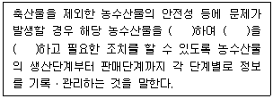
- 추적, 문제점, 분석
- 추적, 원인, 규명
- 관리, 원인, 추적
- 관리, 이력, 추적
(정답률: 알수없음)

2. 농수산물의 원산지 표시에 관한 법령상 캐나다에서 수입하여 국내에서 45일간 사육한 양을 국내 음식점에서 양고기로 판매할 경우 원산지 표시 방법으로 옳은 것은?
- 양고기(국내산)
- 양고기(국내산, 출생국 캐나다)
- 양고기(캐나다산)
- 양고기(양, 국내산)
(정답률: 알수없음)
3. 농수산물의 원산지 표시에 관한 법령상 원산지를 표시하여야 하는 일반음식점을 설치ㆍ운영하는 자가 다른 법률에 따라 발급받은 원산지 등이 기재된 영수증이나 거래명세서 등을 비치ㆍ보관하여야 하는 기간은?
- 매입일부터 2개월간
- 매입일부터 3개월간
- 매입일부터 5개월간
- 매입일부터 6개월간
(정답률: 60%)
4. 농수산물의 원산지 표시에 관한 법령상 다음과 같은 위반행위를 하여 적발된 한우전문음식점에 부과할 과태료의 총 합산금액은? (단, 1차 위반의 경우이며, 경감은 고려하지 않음)(관련 규정 개정전 문제로 여기서는 기존 정답인 4번을 누르면 정답 처리됩니다. 자세한 내용은 해설을 참고하세요.)
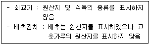
- 90만원
- 130만원
- 150만원
- 180만원
(정답률: 알수없음)
5. 농수산물 품질관리법령상 농산물품질관리사 자격시험에 관한 설명으로 옳은 것은?
- 농산물품질관리사 자격이 취소된 날부터 1년이 된 자는 농산물품질관리사 자격시험에 응시할 수 있다.
- 국립농산물품질관리원장은 수급상 필요하다고 인정하는 경우에는 3년마다 농산물품질관리사자격시험을 실시할 수 있다.
- 농산물품질관리사 자격시험의 실시계획, 응시자격, 시험과목, 시험방법, 합격기준 및 자격증 발급 등에 필요한 사항은 대통령령으로 정한다.
- 한국산업인력공단이사장은 농산물품질관리사 자격시험의 시행일 1년 전까지 농산물품질관리사자격시험의 실시계획을 세워야 한다.
(정답률: 알수없음)
6. 농수산물 품질관리법령상 위반행위에 대한 벌칙기준이 다른 자는?
- 농산물 표준규격품이 표시된 규격에 미치지 못하여 표시정지처분을 내렸으나 처분에 따르지 아니한 자
- 다른 사람에게 농산물품질관리사 자격증을 빌려준 자
- 농수산물 품질관리법에 의해 검사를 받아야 하는 대상 농산물에 대하여 검사를 받지 아니한 자
- 농산물의 검정 결과에 대하여 거짓광고나 과대광고를 한 자
(정답률: 알수없음)
7. 농수산물 품질관리법령상 농산물검정기관ㆍ농산물검사기관ㆍ농산물우수관리인증기관 및 농산물우수관리시설로 지정받기 위한 인력보유기준에 농산물품질관리사 자격증 소지자가 포함되지 않은 곳은?
- 농산물검정기관(품위ㆍ일반성분 검정업무 수행)
- 농산물검사기관(농산물 검사업무 수행)
- 농산물우수관리인증기관(인증심사업무 수행)
- 농산물우수관리시설(농산물우수관리업무 수행)
(정답률: 알수없음)
8. 농수산물 품질관리법령상 농산물우수관리인증의 유효기간 연장신청은 인증의 유효기간이 끝나기 몇 개월 전까지 누구에게 제출하여야 하는가?
- 2개월, 국립농산물품질관리원장
- 2개월, 우수관리인증기관의 장
- 1개월, 국립농산물품질관리원장
- 1개월, 우수관리인증기관의 장
(정답률: 60%)
9. 농수산물 품질관리법령상 농산물품질관리사의 교육에 관한 설명으로 옳지 않은 것은?
- 교육 실시기관은 국립농산물품질관리원장이 지정한다.
- 교육 실시기관은 필요한 경우 교육을 정보통신매체를 이용한 원격교육으로 실시할 수 있다.
- 교육 실시기관은 교육을 이수한 사람에게 이수증명서를 발급하여야 한다.
- 교육에 필요한 경비(교재비, 강사 수당 등 포함)는 교육 실시기관이 부담한다.
(정답률: 73%)
10. 농수산물 품질관리법령상 농산물우수관리의 인증기준에 관한 설명으로 옳지 않은 것은?
- 농산물우수관리시설에서 수확 후 관리를 한 것이어야 한다. (단, 품목의 특성상 농산물우수관리시설에서 관리할 필요가 없는 것으로 판단하여 농림축산식품부장관이 고시하는 품목은 제외)
- 이력추적관리 등록을 한 것이어야 한다.
- 농산물우수관리인증의 세부 기준은 우수관리인증기관의 장이 정하여 고시한다.
- 농산물우수관리의 기준에 적합하게 생산ㆍ관리된 것이어야 한다.
(정답률: 알수없음)
11. 농수산물 품질관리법령상 농산물우수관리인증기관 지정의 유효기간은 지정을 받은 날부터 몇 년인가?
- 2년
- 3년
- 4년
- 5년
(정답률: 알수없음)
12. 농수산물 품질관리법령상 감자를 표준규격품으로 출하할 때 포장 겉면에 '표준규격품'이라는 문구와 함께 표시해야 할 의무사항이 아닌 것은?
- 무게(실중량)
- 산지
- 생산 연도
- 품목
(정답률: 알수없음)
13. 농수산물 품질관리법령상 농산물이력추적관리 등록기관의 장은 등록의 유효기간이 끝나기 몇 개월 전까지 신청인에게 갱신절차와 갱신신청 기간을 미리 알려야 하는가?
- 2개월
- 3개월
- 6개월
- 12개월
(정답률: 알수없음)
14. 농수산물 품질관리법령상 지리적표시의 등록 제도에 관한 설명으로 옳은 것은?
- 지리적표시의 등록을 받으려면 이력추적관리 등록을 하여야 한다.
- 지리적 특성을 가진 농산물의 품질 향상과 지역특화산업 육성 및 소비자 보호를 위하여 실시한다.
- 지리적표시의 등록은 등록 대상지역의 생산자와 유통자가 신청할 수 있다.
- 지리적표시의 등록법인은 지리적표시의 등록 대상품목 생산자의 가입을 임의로 제한할 수 있다.
(정답률: 알수없음)
15. 농수산물 품질관리법령상 다음 ( )안에 들어갈 내용으로 옳은 것은?
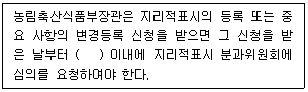
- 30일
- 45일
- 60일
- 90일
(정답률: 알수없음)
16. 농수산물 품질관리법령상 지리적표시의 등록거절 사유의 세부기준으로 옳지 않은 것은?
- 해당 품목의 우수성이 국내나 국외에서 널리 알려지지 않은 경우
- 해당 품목의 명성ㆍ품질 또는 그 밖의 특성이 본질적으로 특정지역의 생산 환경적 요인이나 인적요인에 기인하지 않는 경우
- 지리적 특성을 가진 농산물 생산자가 1인이어서 그 생산자 1인이 등록 신청한 경우
- 해당 품목이 지리적표시 대상지역에서 생산된 역사가 깊지 않은 경우
(정답률: 알수없음)
17. 농수산물 유통 및 가격안정에 관한 법령상 농수산물공판장 및 민영도매시장에 관한 설명으로 옳은 것은?
- 농수산물공판장의 매매참가인은 공판장 개설자가 지정한다.
- 민영도매시장의 시장도매인은 민영도매시장의 개설자가 지정한다.
- 농수산물공판장의 시장도매인은 공판장 개설자가 지정한다.
- 민영도매시장의 중도매인은 시ㆍ도지사가 지정한다.
(정답률: 알수없음)
18. 농수산물 유통 및 가격안정에 관한 법령상 농림축산식품부장관이 유통명령의 발령기준을 정할 때 감안하여야 할 사항이 아닌 것은?
- 품목별 특성
- 농림업 관측 결과 등을 반영하여 산정한 예상 가격
- 표준가격
- 농림업 관측 결과 등을 반영하여 산정한 예상 공급량
(정답률: 알수없음)
19. 농수산물 유통 및 가격안정에 관한 법령상 농수산물 전자거래소를 이용하는 판매자와 구매자로부터 징수하는 거래수수료의 최고한도로 옳은 것은?
- 거래액의 1천분의 20
- 거래액의 1천분의 30
- 거래액의 1천분의 60
- 거래액의 1천분의 70
(정답률: 알수없음)
20. 농수산물 유통 및 가격안정에 관한 법령상 도매시장법인이 농산물을 매수하여 도매할 수 있는 경우가 아닌 것은?
- 농림축산식품부장관의 수매에 응하기 위하여 필요한 경우
- 품목의 특성으로 인하여 해당 품목을 취급하는 중도매인이 소수인 품목의 경우
- 물품의 특성상 외형을 변형하는 등 가공하여 도매하여야 하는 경우로서 도매시장 개설자가 업무규정으로 정하는 경우
- 도매시장법인이 겸영사업에 필요한 농산물을 매수하는 경우
(정답률: 알수없음)
21. 농수산물 유통 및 가격안정에 관한 법령상 계약생산의 생산자 관련 단체가 될 수 없는 것은?
- 지역농업협동조합
- 품목별ㆍ업종별협동조합
- 조합공동사업법인
- 도매시장법인
(정답률: 알수없음)
22. 농수산물 유통 및 가격안정에 관한 법령상 농산물가격안정기금의 재원이 아닌 것은?
- 기금 운용에 따른 수익금
- 과태료 납부금
- 관세법 및 검찰청법에 따라 몰수되거나 국고에 귀속된 농산물의 매각ㆍ공매 대금
- 정부의 출연금
(정답률: 알수없음)
23. 농수산물 유통 및 가격안정에 관한 법령상 농수산물종합유통센터의 필수시설이 아닌 것은?
- 직판장
- 저온저장고
- 주차시설
- 사무실ㆍ전산실
(정답률: 알수없음)
24. 농수산물 유통 및 가격안정에 관한 법령상 도매시장 개설자가 거래 관계자의 편익과 소비자보호를 위하여 이행하여야 하는 사항으로 옳은 것은?
- 상품성 향상을 위한 규격화, 포장 개선 및 선도 유지의 촉진
- 농산물의 수매ㆍ수입ㆍ수송ㆍ보관 및 판매
- 농산물을 확보하기 위한 재배ㆍ선매 계약의 체결
- 농산물의 출하약정 및 선급금의 지급
(정답률: 40%)
25. 농수산물 유통 및 가격안정에 관한 법령상 농수산물도매시장의 다음 거래품목 중 양곡부류를 모두 고른 것은?
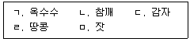
- ㄱ, ㄴ, ㄹ
- ㄱ, ㄷ, ㅁ
- ㄴ, ㄹ, ㅁ
- ㄷ, ㄹ, ㅁ
(정답률: 알수없음)
2과목: 원예작물학
26. 원예작물의 식물학적 분류에서 같은 과(科)끼리 묶이지 않은 것은?
- 배추, 결구상추
- 무, 갓
- 오이, 수박
- 고추, 토마토
(정답률: 75%)
27. 작물의 종류와 주요 기능성물질의 연결이 옳지 않은 것은?
- 포도 – 레스베라트롤(resveratrol)
- 토마토 – 라이코펜(lycopene)
- 인삼 – 사포닌(saponin)
- 블루베리 - 이소플라본(isoflavon)
(정답률: 알수없음)
28. 국내에서 육성한 품종이 아닌 것은?
- 감홍(사과)
- 설향(딸기)
- 거봉(포도)
- 백마(국화)
(정답률: 82%)
29. 재래육묘와 비교하여 플러그육묘(공정육묘)가 갖는 장점이 아닌 것은?
- 투자 비용이 저렴하다.
- 수송이 용이하다.
- 정식 시 상처가 적다.
- 정식 후 활착이 빠르다.
(정답률: 알수없음)
30. 고온에 감응하여 꽃눈이 분화되는 채소작물은?
- 배추
- 무
- 상추
- 당근
(정답률: 알수없음)
31. 추대하면 상품성이 떨어지는 채소작물이 아닌 것은?
- 배추
- 무
- 파
- 브로콜리
(정답률: 64%)
32. 토마토의 착과를 촉진하기 위해 처리하는 생장 조절 물질은?
- 옥신(auxin)
- 시토키닌(cytokinin)
- 에틸렌(ethylene)
- 아브시스산(abscisic acid)
(정답률: 알수없음)
33. 다음 ( )안에 들어갈 내용을 순서대로 나열한 것은?
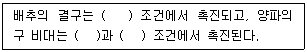
- 저온, 고온, 장일
- 저온, 저온, 단일
- 장일, 고온, 단일
- 장일, 저온, 단일
(정답률: 알수없음)
34. 과채류의 생육에 관여하는 환경 요인에 관한 설명으로 옳지 않은 것은?
- 주야간 온도차가 크면 과실 품질이 향상된다.
- 일반적으로 점질토에서 재배하면 과실의 숙기가 늦어진다.
- 광량이 부족하면 도장하기 쉽다.
- 착과기 이후에 질소를 많이 주면 숙기를 앞당길 수 있다.
(정답률: 알수없음)
35. 토마토 배꼽썩음병의 원인은?
- 질소 결핍
- 칼륨 결핍
- 칼슘 결핍
- 마그네슘 결핍
(정답률: 알수없음)
36. 삽목 번식의 장점으로 옳은 것은?
- 바이러스 감염을 줄일 수 있다.
- 품종 개량을 목적으로 한다.
- 모본의 유전형질을 안정하게 유지할 수 있다.
- 병해충의 저항성을 향상시킬 수 있다.
(정답률: 64%)
37. 거실, 안방 등 광도가 약한 곳에서도 잘 자라는 식물을 고른 것은?
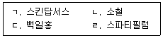
- ㄱ, ㄴ
- ㄱ, ㄹ
- ㄴ, ㄷ
- ㄷ, ㄹ
(정답률: 60%)
38. 줄기 신장을 억제하여 고품질의 분화를 만들고자 할 때 올바른 처리 방법이 아닌 것은?
- B-9, paclobutrazol 등 생장억제제를 처리한다.
- 생장점 부위를 물리적으로 자극한다.
- 주간 온도를 야간 온도보다 높게 관리한다.
- 질소 시비량을 줄이고 수광량을 많게 한다.
(정답률: 알수없음)
39. 여름철에 절화국화를 수확하려고 할 때 알맞은 재배방법은?
- 전조재배
- 암막재배
- 야파처리
- 억제재배
(정답률: 80%)
40. 다음 설명에 해당하는 해충은?
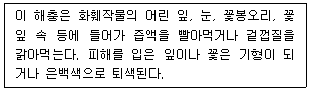
- 도둑나방
- 깍지벌레
- 온실가루이
- 총채벌레
(정답률: 알수없음)
41. 절화의 물 흡수를 원활하게 하기 위한 방법이 아닌 것은?
- 절단면을 경사지게 자른다.
- 물속에서 절단한다.
- 살균제를 넣어준다.
- 냉탕에 침지한다.
(정답률: 알수없음)
42. 절화작물의 수확기 관수방법으로 적합하지 않은 것은?
- 점적관수
- 스프링클러관수
- 저면관수
- 지중관수
(정답률: 알수없음)
43. 시설 내에서 난방유의 불완전 연소로 인해 식물체에 생리장해를 유발하는 물질은?
- 아황산가스
- 암모니아가스
- 불화수소
- 염소가스
(정답률: 알수없음)
44. 어깨, 가슴에 패션용으로 사용하는 꽃 장식은?
- 부케
- 리스
- 코사지
- 포푸리
(정답률: 알수없음)
45. 다음 과실 중에서 장과류에 속하는 것을 고른 것은?
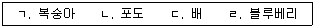
- ㄱ, ㄷ
- ㄱ, ㄹ
- ㄴ, ㄷ
- ㄴ, ㄹ
(정답률: 90%)
46. 토양 관리 방법 중 초생법과 관련이 없는 것은?
- 토양의 입단화
- 병해충 발생 억제
- 지온의 과도한 상승 억제
- 토양의 침식 방지
(정답률: 알수없음)
47. 수확기 사과 과실의 착색 증진을 위한 방법이 아닌 것은?
- 반사필름을 피복한다.
- 봉지를 벗겨준다.
- 잎을 따준다.
- 지베렐린을 처리한다.
(정답률: 알수없음)
48. 자연적 단위결과성 과실에 관한 설명으로 옳지 않은 것은?
- 감귤은 자연적 단위결과성이 높다.
- 종자는 과실발달 중에 퇴화한다.
- 체내 옥신 함량이 높다.
- 과실 내 종자의 유무와 과실의 비대는 관련이 없다.
(정답률: 알수없음)
49. 다음 ( )안에 들어갈 내용을 순서대로 나열한 것은?
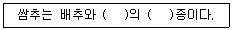
- 양배추, 종간교잡
- 양배추, 속간교잡
- 상추, 종간교잡
- 상추, 속간교잡
(정답률: 59%)
50. 친환경적인 병해충 방제방법이 아닌 것은?
- 천적을 활용하거나 페로몬으로 유인하여 방제한다.
- 연작을 하여 병에 대한 작물의 내성을 기른다.
- 유살등, 끈끈이 트랩을 설치한다.
- 무독한 종묘를 이용하거나 저항성 작물을 재배한다.
(정답률: 알수없음)
3과목: 수확 후 품질관리론
51. 원예산물의 수확 후 생리적 변화를 지연시킬 목적으로 포장열을 신속히 제거하는 전처리기술은?
- 예건
- 예냉
- 큐어링
- 훈증
(정답률: 알수없음)
52. MA 포장재를 선정할 때 고려할 사항으로 가장 거리가 먼 것은?
- 저장고의 상대습도
- 필름의 기체 투과도
- 저장온도
- 원예산물의 호흡속도
(정답률: 알수없음)
53. 원예산물의 수확 후 호흡에 관한 설명으로 옳지 않은 것은?
- 호흡속도가 높을수록 호흡열이 낮아진다.
- 호흡속도는 조생종이 만생종에 비해 높다.
- 호흡속도가 높을수록 신맛이 빠르게 감소한다.
- 호흡속도는 품목의 유전적 특성과 연관되어 있다.
(정답률: 알수없음)
54. 원예산물과 주요 색소성분이 옳게 연결된 것은?
- 순무 – 캡산틴(capsanthin)
- 딸기 – 라이코펜(lycopene)
- 시금치 – 클로로필(chlorophyll)
- 오이 - 베타레인(betalain)
(정답률: 알수없음)
55. 수확 후 원예산물에 피막제를 처리하는 목적으로 옳지 않은 것은?
- 경도 유지 및 감모를 막는다.
- 과실의 착색을 증진시킨다.
- 증산을 억제하여 시들음을 막는다.
- 과실 표면에 광택을 주어 상품성을 높인다.
(정답률: 알수없음)
56. 품목별 에틸렌처리시 나타나는 효과로 옳지 않은 것은?
- 떫은감 – 탈삽
- 바나나 – 숙성
- 오렌지 – 착색
- 참다래 - 경화
(정답률: 알수없음)
57. 원예산물의 저온장해(chilling injury)에 관한 설명으로 옳지 않은 것은?
- 온대작물에 비해 열대작물이 더 민감하다.
- 세포외 결빙이 세포내 결빙보다 먼저 발생한다.
- 대표적인 증상으로는 함몰, 갈변, 수침 등이 있다.
- 간헐적 온도상승처리로 저온장해를 억제할 수 있다.
(정답률: 알수없음)
58. 농산물 포장상자에 관한 설명으로 옳지 않은 것은?
- 통기구가 없는 상자를 이용한다.
- 저온고습에 견딜 수 있어야 한다.
- 다단적재시 하중을 견딜 수 있어야 한다.
- 팔레타이징(palletizing) 효율을 고려하여 크기를 결정한다.
(정답률: 알수없음)
59. 다음 현상의 원인은?
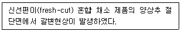
- 전분 분해효소
- 단백질 분해효소
- 폴리페놀 산화효소
- ACC 산화효소
(정답률: 알수없음)
60. 어린잎채소에 관한 설명으로 옳지 않은 것은?
- 성숙채소에 비해 호흡율이 낮다.
- 성숙채소에 비해 미생물 증식이 빠르다.
- 다채(비타민), 청경채, 치커리, 상추가 주로 이용된다.
- 조직이 연하여 가공, 포장, 유통시 물리적 상해를 받기 쉽다.
(정답률: 80%)
61. HACCP에 관한 설명으로 옳지 않은 것은?
- 식품의 안전성 확보를 위한 위생관리 시스템이다.
- 위해발생시 원인과 책임소재를 명확히 할 수 있는 장점이 있다.
- 식품의 제조과정부터 소비자 섭취 전까지를 대상으로 한다.
- HACCP의 7원칙에는 문서화 및 기록유지가 포함된다.
(정답률: 알수없음)
62. 원예산물 포장시 저산소에 의한 이취발생 위험이 가장 낮은 포장소재는? (단, 포장재 두께는 동일함)
- 폴리비닐클로라이드(PVC)
- 폴리에스터(PET)
- 폴리프로필렌(PP)
- 저밀도 폴리에틸렌(LDPE)
(정답률: 알수없음)
63. 예건을 통해 저장성을 향상시키는 원예산물은?
- 고구마, 참외
- 배, 콜리플라워
- 양파, 사과
- 마늘, 감귤
(정답률: 알수없음)
64. CA 저장에 관한 설명으로 옳지 않은 것은?
- 곰팡이 등 부패균의 번식이 억제된다.
- 호흡 및 에틸렌 생성 억제 효과가 있다.
- 생리장해 억제를 위해 주기적인 환기가 필요하다.
- 수확시기에 따라 저산소 및 고이산화탄소 장해에 대한 내성이 달라진다.
(정답률: 46%)
65. 신선편이(fresh-cut) 농산물에 관한 설명이다. ( )안에 들어갈 내용을 순서대로 옳게 나열한 것은?
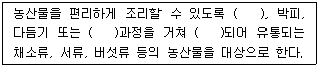
- 세척, 후숙, 멸균
- 절단, 선별, 건조
- 세척, 절단, 포장
- 선별, 예냉, 냉동
(정답률: 73%)
66. 원예산물의 외관을 결정하는 품질요인으로 옳은 것을 고른 것은?
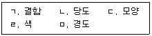
- ㄱ, ㄴ, ㄷ
- ㄱ, ㄷ, ㄹ
- ㄴ, ㄷ, ㅁ
- ㄴ, ㄹ, ㅁ
(정답률: 알수없음)
67. 다음 증상에 해당하는 것은?
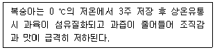
- 저온장해
- 병리장해
- 고온장해
- 이산화탄소장해
(정답률: 알수없음)
68. 원예산물과 대표적인 유기산이 옳게 짝지어지지 않은 것은?
- 사과 - 사과산(malic acid)
- 복숭아 - 젖산(lactic acid)
- 포도 - 주석산(tartaric acid)
- 감귤 - 구연산(citric acid)
(정답률: 알수없음)
69. 원예산물의 성숙단계에서 나타나는 생리적 현상으로 옳지 않은 것은?
- 환원당 증가
- 세포벽분해효소 활성 증가
- 불용성펙틴 증가
- 풍미성분 증가
(정답률: 알수없음)
70. 원예산물의 저장 및 유통시 자주 발생하는 결로현상의 주원인은?
- 이산화탄소 농도 차이
- 원예산물의 수분 함량
- 공기 유속
- 품온과 외기의 온도차
(정답률: 알수없음)
71. 원예산물에 의해 발생할 수 있는 식중독 유발 독성 물질이 옳게 짝지어진 것은?
- 블루베리 – 고시폴(gossypol)
- 감자 – 리시닌(ricinine)
- 양파 – 솔라닌(solanine)
- 청매실 - 아미그달린(amygdalin)
(정답률: 알수없음)
72. 원예산물 저장 중 에틸렌 농도를 낮추기 위한 방법으로 옳은 것을 모두 고른 것은?
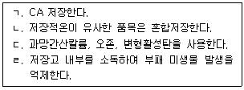
- ㄱ, ㄷ
- ㄴ, ㄹ
- ㄱ, ㄷ, ㄹ
- ㄴ, ㄷ, ㄹ
(정답률: 알수없음)
73. 양파의 수확 후 맹아와 관련된 설명으로 옳은 것은?
- 맹아신장 억제를 위한 저장온도는 약 10℃이다.
- 맹아신장 억제를 위한 방사선 조사는 휴면기 이후에 실시한다.
- 수확 후 일정기간 휴면기간이 있으므로 바로 맹아신장하지 않는다.
- MH(maleic hydrazide)는 잔류허용기준이 없는 친환경 맹아신장 억제제이다.
(정답률: 알수없음)
74. 호흡급등형 과실에 관한 설명으로 옳지 않은 것은?
- 숙성 후 호흡급등이 일어난다.
- 사과, 바나나가 대표적인 호흡급등형 과실이다.
- 에틸렌 처리시 호흡급등 시기가 빨라진다.
- 호흡급등시 에틸렌 생성 급등이 동반된다.
(정답률: 알수없음)
75. 원예산물의 품질요소와 판정기술의 연결로 옳지 않은 것은?
- 산도 : 요오드반응
- 당도 : 근적외선(NIR)
- 내부결함 : X선(X-ray)
- 크기 : 원통형 스크린 선별
(정답률: 알수없음)
4과목: 농산물유통론
76. 농산물 유통의 조성기능으로 옳지 않은 것은?
- 금융
- 시장정보
- 홍보 및 광고
- 표준화 및 등급화
(정답률: 알수없음)
77. 최근 농산물 소비 트렌드에 관한 설명으로 옳지 않은 것은?
- 식료품에 지출되는 소득의 비중(엥겔계수)이 감소하고 있다.
- 가공 및 조리식품의 소비가 감소하고 있다.
- 신선편이농산물의 소비가 증가하고 있다.
- 소포장 농산물의 소비가 증가하고 있다.
(정답률: 알수없음)
78. 농산물 유통마진에 관한 설명으로 옳은 것은?
- 유통단계별로는 소매단계의 유통마진이 가장 낮다.
- 포전거래의 비중이 높은 엽근채류의 유통마진이 가장 낮다.
- 유통마진율은 판매액에서 구입액을 뺀 차액을 구입액으로 나눈 값이다.
- 유통경로 또는 측정시기에 따라 달라진다.
(정답률: 알수없음)
79. 농산물 공동계산제에 관한 설명으로 옳지 않은 것은?
- 농산물의 대량거래를 통하여 생산자(단체)의 시장교섭력이 증대된다.
- 표준화된 공동선별로 농산물의 상품성이 높아지게 된다.
- 등급별 평균가격에 의한 정산과정을 통하여 농가의 소득이 안정된다.
- 다수의 농가가 참여하여 농산물의 브랜드화가 어려워진다.
(정답률: 80%)
80. 농산물 선물거래에 관한 설명으로 옳지 않은 것은?
- 농산물 재고의 시차적 배분을 촉진한다.
- 위험전가(헤징)기능과 미래 현물가격에 대한 예시기능을 수행한다.
- 상류와 물류가 분리된 채로 거래될 수 없다.
- 거래소에서 표준화된 계약조건에 따라 거래가 이루어진다.
(정답률: 알수없음)
81. 경쟁업체보다 높은 수준의 정상가격을 유지하다가 파격적인 가격할인으로 수요자를 끌어들이는 가격전략은?
- EDLP
- 하이 – 로우가격전략
- 단수가격전략
- 개수가격전략
(정답률: 알수없음)
82. 특정 상품계열에서 전문점 수준의 깊은 구색을 갖추고 저렴하게 판매하는 소매유통업체는?
- 슈퍼센터 (supercenter)
- 호울세일클럽 (wholesale club)
- 카테고리킬러 (category killer)
- 슈퍼슈퍼마켓 (super supermarket)
(정답률: 알수없음)
83. 도매시장 개설자의 지정을 받고 농수산물을 출하자로부터 매수 또는 위탁받아 도매하거나 매매를 중개하는 유통주체는?
- 시장도매인
- 중도매인
- 도매시장법인
- 매매참가인
(정답률: 46%)
84. 농산물종합유통센터의 운영 성과에 관한 설명으로 옳지 않은 것은?
- 경매를 통한 도매거래의 투명성 확보
- 농산물 유통경로의 다원화
- 표준규격품의 출하 유도
- 유통의 물적 효율성 제고
(정답률: 30%)
85. 농산물의 산지 브랜드에 관한 설명으로 옳은 것을 모두 고른 것은?
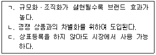
- ㄱ, ㄴ
- ㄱ, ㄷ
- ㄴ, ㄷ
- ㄱ, ㄴ, ㄷ
(정답률: 알수없음)
86. 거점 농산물산지유통센터(APC)에 관한 설명으로 옳지 않은 것은?
- 일반 APC와 비교하여 규모화된 센터이다.
- 공동계산제를 통하여 농가 조직화를 유도한다.
- 대형유통업체를 주요 출하처로 한다.
- 산지 경매를 통하여 농가수취가격을 결정한다.
(정답률: 알수없음)
87. 농산물 수송수단 중 철도, 선박, 비행기와 비교한 자동차의 장점으로 옳은 것은?
- 문전연결성이 가장 높다.
- 안전성ㆍ정확성이 가장 우수하다.
- 속도가 가장 빠르다.
- 장거리 대량 운송비용이 가장 저렴하다.
(정답률: 알수없음)
88. 농산물 유통 정보의 요건에 해당되지 않는 것은?
- 이용자의 요구를 충분히 반영하여야 한다.
- 이용자에게 신속하게 제공되어야 한다.
- 추가 지식이 필요한 전문적인 정보가 담겨야 한다.
- 실수, 오류 또는 왜곡이 없어야 한다.
(정답률: 알수없음)
89. 농산물 표준규격화의 결과로 옳지 않은 것은?
- 유통 정보가 보다 신속하고 정확하게 전달된다.
- 품질에 따른 공정한 가격이 형성되어 거래가 촉진된다.
- 소비지의 쓰레기 발생이 억제되어 환경오염을 줄인다.
- 부가업무가 생겨 도매시장 경영ㆍ관리의 능률이 저하된다.
(정답률: 58%)
90. 농산물 팔레트(pallet) 상자에 관한 설명으로 옳지 않은 것은?
- 초기 투자비용이 적게 소요된다.
- 상자와 팔레트를 결합한 형태이다.
- 상ㆍ하차, 수송의 효율성이 높다.
- 농산물 수확 단계에서 많이 사용된다.
(정답률: 알수없음)
91. 농산물 가격안정화를 위한 방법으로 옳지 않은 것은?
- 정부는 작물의 파종시기 이전에 재배의향면적 정보를 공지한다.
- 정부는 가격 급락 우려 시 비축물량을 선제적으로 방출한다.
- 농가는 산지 조직화에 노력하여 유통명령제도의 효과를 높인다.
- 농가는 자조금을 조성하여 수급 변화에 적극 대응한다.
(정답률: 알수없음)
92. 완전경쟁시장에 관한 설명으로 옳지 않은 것은?
- 수요자와 공급자는 완전한 시장정보를 가진다.
- 동종ㆍ동질의 상품이 공급된다.
- 거래자는 가격순응자이다.
- 시장가격은 개별기업의 한계수익보다 높다.
(정답률: 알수없음)
93. 수요의 자체가격 탄력성에 관한 설명으로 옳은 것을 모두 고른 것은?
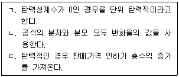
- ㄱ, ㄴ
- ㄱ, ㄷ
- ㄴ, ㄷ
- ㄱ, ㄴ, ㄷ
(정답률: 알수없음)
94. 시장세분화에 관한 설명으로 옳은 것을 모두 고른 것은?
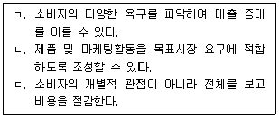
- ㄱ, ㄴ
- ㄱ, ㄷ
- ㄴ, ㄷ
- ㄱ, ㄴ, ㄷ
(정답률: 62%)
95. 자료가 부족하고 통계분석이 어려울 때 관련 전문가들을 통하여 종합적인 방향을 모색하는 마케팅 조사법은?
- 서베이조사법
- 패널조사법
- 관찰법
- 델파이법
(정답률: 알수없음)
96. 상표충성도(brand loyalty)에 관한 설명으로 옳지 않은 것은?
- 상표를 통하여 제품의 구매가 결정된다.
- 반복구매를 통하여 나타난다.
- 편견이 없는 합리적인 구매행동으로 표출된다.
- 심리적인 의사결정과정에서 형성된다.
(정답률: 알수없음)
97. 시장이 확대되어 기업이 생산량을 증가시키고 상품 및 가격차별화를 도모하는 상품수명주기(PLC) 단계는?
- 도입기
- 성장기
- 성숙기
- 쇠퇴기
(정답률: 알수없음)
98. 농산물가격의 특징으로 옳지 않은 것은?
- 안정성
- 계절성
- 지역성
- 비탄력성
(정답률: 알수없음)
99. 명성가격전략에 관한 설명으로 옳은 것은?
- 경제성의 이미지를 제공하여 구매를 자극하기 위한 심리적 가격전략이다.
- 어떤 상품의 가격이 자동적으로 연상되도록 하는 가격전략이다.
- 상품가격을 높게 책정하여 품질의 고급화와 상품의 차별화를 나타내는 전략이다.
- 고급품질의 이미지 제공으로 구매를 자극하기 위하여 '하나에 얼마' 하는 방식으로 가격을 책정하는 전략이다.
(정답률: 54%)
100. 농산물 광고에 관한 일반적인 설명으로 옳은 것을 모두 고른 것은?
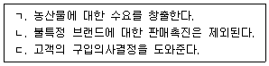
- ㄱ, ㄴ
- ㄱ, ㄷ
- ㄴ, ㄷ
- ㄱ, ㄴ, ㄷ
(정답률: 알수없음)